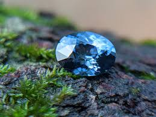

|  |
Sri Lanka is a country that possesses the highest density of
gemstone deposits in the world. The landmass spans across 65,000
square kilometers, out of which 80% has been undisputedly
declared as 'Potential Gem Bearings.' Sri Lanka produces over 75
varieties of gemstones out of around 200 known gemstone
varieties. The main species of gemstones found in Sri Lanka are
Sapphire, Ruby, Cat's Eye, Alexandrite, Chrysoberyl, Spinel,
Topaz, Zircons, Tourmaline, and Garnets. These gemstones occur
mainly in alluvial gravels found in valley bottoms into which
flow tributary hillside streams that carry gem minerals released
by weathering from the bedrock sources located at hilltops or
hillsides. Some rocks have also been shown to contain gemstones,
particularly varieties of Corundum. There are also gemstones
associated with pegmatite which constituted an important source.
|